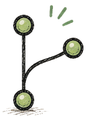

Swap augmentation killed position bias in preference model.
DBSCAN beat K-Means at finding pollution hotspots.
Drift monitor computing PSI every 5 minutes, in production style.
✗ failed ← kept on purpose
First RAG stress test: 20 hard queries, many misses. Fixed chunking → 78% accuracy, documented in FAILURES.md.
LangChain version had too much overhead. Deleted it, rewrote retrieval in ~60 lines.
CLIP adapter variance collapsed to zero. KL warmup schedule fixed it.
// index cards · how I work
Engineering principles
Ship before perfect
Small working systems beat ambitious prototypes. Cachy launched with a three-provider fallback chain because free APIs kept dropping.
Measure everything
If I can't evaluate it, I can't improve it. Even the skills section on this page has numbers.
Understand the abstraction
I write core pieces from scratch before reaching for a framework. That's how the 60-line retriever happened.
Failures are artifacts
Dead ends get documented. FAILURES.md ships with the repo because I keep needing it later.
// pinned to the desk
Selected projects start with the RAG one ↓
Each card shows the pipeline it ran through. All code on GitHub.
Cachy
knowledge engine · flutter + fastapi
Turns Reels, Shorts and articles into structured knowledge cards: transcription, OCR, an LLM chain with automatic fallback across Gemini / Cerebras / Groq, all linked in a semantic knowledge graph.
Ask the Indian Constitution anything, get grounded answers with exact citations and similarity scores. Retrieval written from scratch in ~60 lines. A 20-query stress test is documented in the repo, 78% accuracy after fixing chunking.
XGBoost match-outcome model served over FastAPI, with a monitor computing Population Stability Index every 5 minutes to catch data drift, and a live Streamlit health dashboard. Three services, Docker Compose.
Control PowerPoint with bare hands through a webcam: swipe to navigate, point for a live laser dot, pinch to zoom. Orientation-invariant detection with dwell-time guards against accidental triggers.
A year of data from 14 CPCB stations, 6 engineered features, three clustering algorithms compared. DBSCAN worked best since it flags outliers, and the outliers were the hotspots. Silk Board hit AQI 500.
Handwriting-to-text Android keyboard for seniors: on-device ink recognition, a personal dictionary that learns your writing, and Catmull-Rom smoothing to filter hand tremor.
Find any Indian dish by describing it in plain English, or by uploading a photo of something similar. Built to test whether CLIP holds up on something domain-specific instead of the usual stock-photo demos. It does.
Upload a leaf photo, get a diagnosis, and a Grad-CAM heatmap showing exactly which part of the leaf the model looked at. Because a prediction plus a confidence score tells you nothing about whether it read the lesion or the background.
Apps, shipped each began as an itch on my own machine
Five native macOS apps in Swift, plus mobile. Building the whole product around a model is the point — these are the reps.
Insomniac.appmacOS
Keeps a Mac awake, lid closed included. Timed durations, global shortcut, and smart triggers: auto-enables on chosen apps, Wi-Fi networks, high CPU, or active downloads. Scriptable via insomniac:// URL scheme.
Custom 3/4/5-finger trackpad gestures for window snapping, media control, launching apps. A slow swipe switches windows, a fast flick opens the browser. Reciprocal undo, haptic feedback, per-app filters.
Themes the macOS menu bar, which Apple gives you no API for. Click-through overlay at the menu bar's own window level, gradients and blur, auto-presets on window state, notch-aware, and it reads menu titles via Accessibility API to keep them legible.
Swift · SwiftUI · Accessibility API · CGWindowList
// running total: 18 shipped, 5 more building. all on this page.

// small sharp tools
Tools & extensions scratch-my-own-itch drawer
Little utilities that fix one annoyance each. Most exist because the OS said no.
chrome-to-safari
dev tool · extension signing
Turn any Chrome extension into a working, signed Safari extension — no $99/year Apple Developer ID. Drop a folder or paste a store link; it signs with a free Apple ID so the extension stays enabled across restarts.
Sign any macOS .app locally with a free Apple certificate. Kills Gatekeeper friction on apps you build yourself and keeps development-signed Safari extensions enabled for good. One command.
An Obsidian plugin that auto-hides both sidebars in fullscreen or a narrow window, then reveals them when you hover the window edge. Leaving fullscreen restores the layout you had.
Automates the boring parts of a random-chat site behind a toggle: keyword-skip, username filters (regex too), skip-history, auto-greet, and auto-restart on disconnect — all from a clean popup.
Five projects with PRDs + TRDs written, in build order — the first two now have working cores on GitHub. One thread runs through them: AI that knows when it doesn't know — calibration, abstention, verifiable privacy.
real output — not a mockup · runs offline, zero API keys
$ python -m sahayak ask "cheap crop loan for farmers"The Kisan Credit Card provides farmers with timely and affordable
short-term credit… loans up to ₹3 lakh at ~4% with prompt repayment. [1]Sources: [1] Kisan Credit Card — myscheme.gov.in · (confidence: 0.43)$ python -m sahayak ask "who won the cricket world cup"I'm not fully sure, and I won't guess on something that affects
your benefits. Please verify at the official source. (abstained)$ python -m oracle backtest
model Brier ECEpersistence (lag-7) 0.437 0.433
logistic (calibrated) 0.204 0.085← beats both baselines
conformal coverage 0.88 (target 0.80)
building · flagship · code on github
Sahayak
grounded rag + rules engine
Grounded, cited answers about India's 3,000+ welfare schemes, plus a deterministic eligibility engine. Ask "I'm a Karnataka farmer with 2 acres — what do I get?" and get a checklist, not a keyword search. Abstains when it isn't sure. Retrieval core shipped — from-scratch hybrid retriever + rules engine + eval harness.
Honest, calibrated predictions about your own behaviour — the shown 80% is right ~80% of the time. The hard part is meaningful ML on a tiny, noisy, single-person dataset without lying about confidence. Modeling core shipped — from-scratch logistic regression + split-conformal, backtested.
Turns a 40-hour lecture playlist into a syllabus-mapped course pack: topic notes cited to video + timestamp, a coverage map, likely exam questions, and Anki flashcards. A full pack must cost ₹0.
WhatsApp analytics where your chats never leave your device — and you can prove it. Deterministic on-device stats, a Spotify-Wrapped-style share card, and an architecture that makes uploading impossible, not just avoided.
A calibrated resume scorer (trained shortlist model, not LLM vibes) plus crowdsourced per-company interview intelligence. Flagged "maybe" until the cold-start data problem has a real, no-scraping answer.
Data MiningBangalore AQI · clustering · feature engineering
App Development7 shipped apps · Flutter · Swift · Kotlin
Preference LearningSiamese DeBERTa paper · human preference prediction
// research wall · click a paper
Papers under review
Written as an MTech student, trained on free GPUs. Click to flip.
status: under review
Efficient LLM Preference Prediction
Siamese DeBERTa with swap augmentation & temperature calibration
trained for $0 !
flip →
the short version
Predicts which chatbot answer humans prefer, at 98% of state-of-the-art with a model 127× smaller (71M params), trained for $0 on free T4s in 8.4 hours.
log loss 1.052 → 0.987 · accuracy +3.5pts
what I learned: swap augmentation bought more accuracy than a bigger model would have.
Probabilistic adapters for frozen CLIP vision foundation models
knows when it's unsure
flip →
the short version
Makes CLIP say how sure it is: a 4.2M-param adapter on frozen CLIP outputs distributions, Monte Carlo sampling turns them into uncertainty scores that catch 36.6% of failures at 8.1% false alarms.
R@1 68.9% · ECE 0.062 (best of all baselines)
what I learned: skip KL warmup and the variance collapses to zero.